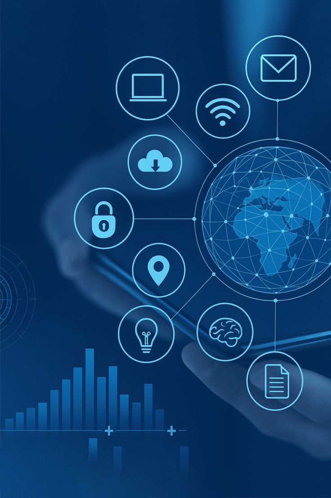
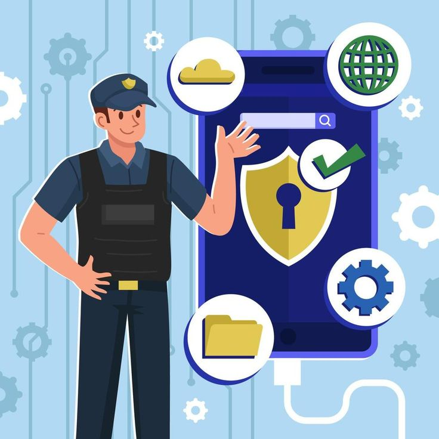

PROGRAMA DE CONSCIENTIZAÇÃO E RESILIÊNCIA CIBERNÉTICA
Atividade Extensionista: Governança e Comportamento Profissional
1. OS PILARES DA SEGURANÇA (TRÍADE CID)
A segurança da informação garante a continuidade operacional através de três diretrizes:
Confidencialidade: Garantia de que a informação seja acessível apenas por pessoas autorizadas.
Integridade: Salvaguarda da precisão da informação, prevenindo alterações indevidas, sejam elas intencionais ou acidentais.
Disponibilidade: Garantia de que sistemas e dados estejam acessíveis sempre que necessário (on-demand).
2. AS 5 REGRAS DE OURO DA ATENÇÃO
Se é urgente demais: Pause e valide. A urgência induz ao erro e é a principal ferramenta para contornar protocolos.
Se pede para pular um processo: Desconfie. Processos garantem sua segurança jurídica e a integridade da operação.
Se não é ferramenta oficial: Não utilize sem validação prévia da TI (Shadow IT).
Se parece estranho: Não execute. Reporte ao suporte técnico.
Se não tem certeza: Pergunte. Validar uma ação leva segundos; remediar um incidente pode levar dias.
3. USO DO COMPUTADOR E RESPONSABILIDADE (WIN + L)
Quando você está logado no computador, qualquer ação feita nele fica registrada como se fosse você.
Se você deixar o computador desbloqueado, outra pessoa pode acessar informações da empresa, enviar mensagens no seu nome e realizar ações sem o seu conhecimento.
Isso pode gerar problemas e responsabilidades para você.
Boa prática: Sempre bloqueie o computador ao se afastar, mesmo que seja por pouco tempo. Use o atalho: Windows + L

4. SEGURANÇA FÍSICA E POLÍTICA DE MESA LIMPA
A proteção da informação começa no ambiente físico. Um documento exposto é uma vulnerabilidade crítica.
Mesa Limpa: Ao final do expediente ou em ausências prolongadas, nenhum documento contendo dados sensíveis deve ser deixado sobre a mesa.
Gestão de Senhas Físicas: É estritamente proibido anotar senhas em Post-its, agendas abertas ou embaixo do teclado.
Impressões: Retire imediatamente qualquer documento enviado para a impressora.
Dispositivos Removíveis: Nunca conecte pendrives ou dispositivos desconhecidos na sua estação de trabalho.
5. GESTÃO DE CREDENCIAIS (PADRÃO NIST)
A segurança de uma conta depende mais do comprimento do que apenas da troca de símbolos.
Priorize Passphrases: Prefira frases longas (Ex: SapatosConfortaveis_Usaflex_2026). Elas são mais resistentes a ataques de força bruta e mais fáceis de memorizar.
Entropia: Utilize letras maiúsculas, minúsculas e números para aumentar a resistência da frase.
6. CONTINUIDADE OPERACIONAL E BACKUP
Arquivos locais: Pastas como “Desktop” e “Documentos” ficam armazenadas apenas no computador e podem não estar incluídas no backup da empresa.
Armazenamento corporativo (nuvem): Sempre salve seus arquivos em ferramentas homologadas como Microsoft OneDrive ou SharePoint. Elas garantem: backup automático, acesso de diferentes dispositivos e versionamento.
Importante: “Nuvem” é uma forma de armazenamento em servidores da empresa acessíveis pela internet.
Boa prática: Sempre verifique se o arquivo está salvo na nuvem. Evite manter arquivos importantes apenas no computador.
7. SHADOW IT E GOVERNANÇA DE FERRAMENTAS
O uso de ferramentas não autorizadas (Shadow IT) configura um risco crítico de exfiltração de dados.
Utilize exclusivamente os softwares homologados pela TI e gestores.
Validação Prévia: Antes de utilizar sites externos (ex: conversores de arquivos, editores de PDF online), valide com a TI. Esses serviços podem armazenar seus dados sem qualquer governança corporativa.
8. INTEGRIDADE NA COMUNICAÇÃO E ENGENHARIA SOCIAL
E-mail interno (Outlook): Mesmo sendo interno, nem toda mensagem é confiável.
Fique atento a situações como: Um colega ou gestor pedindo algo urgente fora do comum; Pedido de acesso ou alteração de informações sem explicação clara; Mensagens que fogem do comportamento normal da pessoa.
O que fazer: Confirme diretamente com a pessoa (presencialmente ou por telefone). Em caso de dúvida, não execute a ação e avise a TI.
Canais: No Outlook verifique o endereço @usaflex.com.br. No Teams observe a etiqueta "Externo". No caso de arquivos, se um anexo pedir para habilitar conteúdo ou credenciais de rede, interrompa a ação.
9. GLOSSÁRIO TÉCNICO DE RISCOS
PHISHING: Iscas digitais para captura de credenciais.
RANSOMWARE: Software malicioso que sequestra dados via criptografia.
MFA FATIGUE: Bombardeio de notificações para te induzir a aceitar por erro. Mitigação: Negue acessos que você não iniciou.
CHECKLIST DE CONFORMIDADE
☐ Minha senha é longa (Passphrase) e memorizável?
☐ O bloqueio Win+L é um reflexo automático em minha rotina?
☐ Minha mesa está livre de documentos sensíveis e senhas anotadas?
☐ Meus arquivos de trabalho estão salvos na nuvem oficial (SharePoint/OneDrive)?
☐ Trato anexos de e-mail com cautela, conferindo sempre o remetente real?

CONCLUSÃO
Segurança cibernética administrativa é sobre postura, vigilância e conformidade.
O profissional consciente compreende que as ferramentas oficiais existem para proteger os ativos da empresa e sua carreira. Na dúvida, o Service Desk é seu aliado.